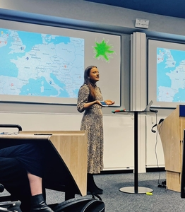

About the fellowship
The Newspeak House yearly fellowship programme is designed to support mid-career technologists to develop a holistic understanding of the civic landscape in the UK, in order to found groundbreaking new projects or seek strategic positions in key institutions.
The cohort has created a multimedia publication that covers the latest developments and trends in political technology.
In April 2025 the cohort completed their grantmaking project: the 2025 Political Technology Awards, whose write-up includes the allocation of funding as part of that project. Additionally, each cohort member wrote individual reflections on the grantmaking process.
The 2024 cohort hail from 11 countries and collectively speak more than 15 languages.
2024 Fellowship Candidates
Heather McRobie Allansdottir
Law scholar and writer at the intersections of public international law and political technologies. Doctorate in Law from Oxford University; Lecturer in international and human rights law in Iceland, Australia, and the UK; Researcher in space law and sustainability.
Ollie Bream McIntosh
Researcher and designer at the intersections of sustainability transitions and collective intelligence. PhD Candidate at Brussels School of Governance; Principal Consultant at Raincoatfish; Associate Researcher at Mútua Systems.
Jyotsna Iyer
Jyo is a Research Assistant at The Alan Turing Institute in the Trustworthy Digital Infrastructures for Identity Systems project. She is currently interested in producing research/projects in the field of political economy/platform economy and has been developing an independent research practice which draws from the humanities (literary and cultural studies, media studies, philosophy).
Richard Kemp
Focused on cultural evolution, coordination problems, spirituality, and optimism. Interested in recreating the positive effects of religious faith in a distributed way and reforming democracy for a complex world. Background in engineering and financial services; enjoys programming, fantasy, science fiction, and music. Created Community Platform.
Paulina Wisdom
Data analyst with degrees in Applied Mathematics and Data Analytics, shifting to public health to apply behavioral science and game theory. Experienced in community-building and connecting students with non-profits. Passionate about leveraging technology, science, and art for positive change. Created Spare Change and How We Doin.
Claddagh
 Claddagh's background lies in political advocacy and campaigns, and scrappy start-ups. She holds master’s degrees in public policy and computer science. She cares about trade unionism and workers rights, growth, R&D, economic equality, and an effective state, and is interested in exploring their intersections with political technology while at Newspeak.
David Norton

Leads research, development, and innovation at Ekō, mobilizing millions to hold corporations accountable. Previously worked in Washington, D.C., Brussels, and London, including roles at the ITUC. Studied sociology, political science, corpus linguistics, and gender studies, focused on how ideas and movements spread online. Created Placemarked and Thanks, JK.
Dorcas Nyamwaya
Governance specialist researching digital technologies, democratic processes, and justice. Focused on using data and technology to promote equity and address global challenges. Background in law with experience in urban development and AI governance initiatives.
Tristan Spill
Graphic designer interested in making hyper local Zines and floating wonders. Exploring Green issues, energy policy and neurodiversity as well as new methods to deal with overwhelm, infoglut and linkrot. Created for you page A4 mini-zine.
Melissa Tranfield
Software engineer focused on using technology, education, and policy to build a better society. Contributes to Campaign Lab on progressive tech and election tools, and organizes for codebar, teaching programming to minority groups. Passionate about exploring well-designed political tech to drive social change. Created Wealth Watch.
Casimir Jan Wanot
Software engineer at ExpressVPN, exploring game development and meditation. Interested in large-scale human systems, AI safety, and how individual actions shape them. Practices Global Wayfinding meditation and writes about spirituality and AI alignment on his blog.
Simon Wisdom
Simon combines analytical thinking and creative experimentation to bring joy to his small corner of the world. Currently focused on AI, exploring technical alignment, governance, and policy. He enjoys tinkering on creative projects and facilitates connection workshops at festivals and workplaces. Created ChatLinks and Whirlpool.
Yung-Hsuan Wu
Yung-Hsuan is a social studies researcher on AI dedicated to portraying the co-constitutive relationship between technology and society. During the day, he works as an algorithmic auditor at Eticas. Outside of work, he likes roaming around the city aimlessly, writes people around him into stories, and works on secret side projects. Check them out here. Created Immigration Email Drafter.